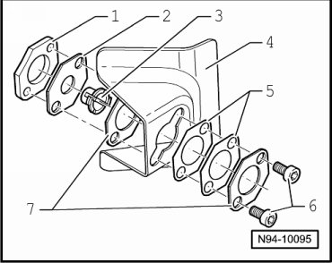

Adjustable Tail Lamp Assembly Carrier Assembly Overview
Adjustable Tail Lamp Assembly Carrier Assembly Overview

1 Threaded plate (4.0 mm thick)
2 Clip mount (1.2 mm thick)
3 Plastic clip nut
4 Mounting plate
5 Spacer piece (0.5 mm thick)
6 Socket head bolts
7 Spacer piece (0.04 in thick)